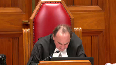

Her Majesty the Queen v. Monty Shane Kishayinew
This transcript was made with automated artificial intelligence models and its accuracy has not been verified. Review the original webcast here.
Justice Rowe (00:00:01): The court, la cool.
Justice Moldaver (00:00:24): Please be seated, if you like.
I don’t know whether you’re seated or standing, frankly, but good afternoon, everyone.
In the matter of Her Majesty the Queen, appellant, and Monty Shane Kishianu, respondent.
W.D. Sinclair, QC, for the appellant.
Brian Feferle, I hope I pronounced that correctly.
And Aleta Oberholzer, for the respondent.
And Louis Belot, for the amicus curiae.
Everybody here?
Okay, good.
So there’s a publication ban on this file, pursuant to section 486.4, bracket one, of the criminal code.
Yes, Mr. Sinclair, please, go ahead.
Speaker 1 (00:01:27): that thank you.
Justice mold ever.
My apologies to the court for being less than technologically adept.
I I’m I’m very sorry for the delay this afternoon.
I will proceed.
Though this is an appeal from a decision of the Saskatchewan court of appeal quashing a sexual assault conviction and ordering a new trial.
The ground respectfully submits that the court erred in quashing the conviction and finding the verdict to be unreasonable in 2 general ways.
First by airing in the interpretation of to 73.1 of the criminal code or its application of that lot to the facts as the trial judge found them to be.
And secondly by finding that the verdict was the product of illogical or irrational reasons and unreasonable for that reason.
Dealing with the first issue justices.
This error relates to the conclusion that the trial judge stopped short of finding the complaint and did not consent to the sexual activity in question.
This is important because it seems to me implicit in the Court of Appeals decision that had the trial judge made a finding of no consent in the in the opinion of the majority.
They wouldn’t have found the verdict to be unreasonable.
The majority’s interpretation of the reasons that trial which were that the trial judge stopped short of making that finding but in my respectful submission.
They actually contradicted what the trial judge said and made it clear that their interpretation was inconsistent with the laws that would apply to the findings made by the trial judge.
Justice Moldaver (00:03:26): If I understand it correctly, the difference between the majority and the dissenting judgement was that the majority did not take what the trial judge said at paragraphs, we’ll say 94, 96 and 97, but particularly 97, did not take that as a finding that the complainant actually did not consent.
Rather, they took that more as him having a reasonable doubt about that, and that’s why he had to go on to look at capacity.
Whereas the minority decision said no, no, he actually found that she did not consent, he was satisfied beyond a reasonable doubt based on the circumstantial evidence and so on, including the blackout, but based on the circumstantial evidence of the whole evening and the surrounding events, and the evidence he believed, and did make a finding, albeit perhaps one that could have been stated a little bit more clearly.
Overlapping speakers (00:04:32): Yes.
Justice Moldaver (00:04:33): then did he go on to do what he really didn’t have to go on to do.
Speaker 1 (00:04:36): Right.
I think that’s it precisely, Justice Moldaver.
Now, we know that the complainant did not have a memory of all of the sexual activity in question.
Justice Côté (00:04:47): Mr. St. Clair on that, at paragraph 6 of the majority reasons of the Court of Appeal, the last sentence, the majority says the term blackout here refers to a lack of memory, not sleep or loss of consciousness.

Where does it come from?
Speaker 1 (00:05:08): Well that’s a good question, Justice.
The complainant testified that she had no memory.
She simply couldn’t remember, but she speculated that she fainted and was therefore unconscious.
The trial judge didn’t make a finding.
If he stopped short of making a finding of fact, he stopped short of finding that she was unconscious.
He found that she couldn’t remember, but he didn’t find that she was conscious or unconscious.
Overlapping speakers (00:05:42): But the
Speaker 1 (00:05:42): And so I’m not sure if that addresses the question.
The complainant did not have a conscious memory of the act of sexual intercourse.
She remembered everything else that happened to her.
Overlapping speakers (00:05:55): Except for that part.
Speaker 1 (00:05:56): Right, right.
So concerning the activity that she could remember…
Justice Moldaver (00:06:06): it wasn’t just for that part she she earlier in the evening had a blackout as well which the trial judge accepted and she didn’t remember that part too so this wasn’t just a singular event during the sexual intercourse
Speaker 1 (00:06:24): Yes, that’s true, Justice Moldaver.
So in terms of the things that she could remember, she repeatedly asserted that she did not consent to any of that sexual activity.
The trial judge made it clear that he accepted her testimony in its entirety, and he provided extensive reasons explaining why.
So for example, justices, he found as a fact that the respondent forced the complainant into the basement, prevented her from escaping.
He found that she tried to escape more than once before the respondent forcibly kissed her, touched her chest without her consent, and then tried to pull her pants down as she physically resisted.
He found as a fact that she rejected all of those sexual advances when she was conscious.
And further in paragraphs 97 and 101, he expressly stated that the complainant did not consent to any of the sexual activity in question.
The idea that the trial judge stopped short of finding no consent, which by the way, was never argued in the court below.
That wasn’t an argument that was advanced by the respondent in the court below.
And you can see that because I’ve included the respondent’s written submissions in the appellant’s record, his factum in the Court of Appeal.
The idea simply ignored what I consider to be the clear and reasonable findings of fact made by the trial judge.
Either that or else the majority judges misunderstood what 273.1 means.
That section makes it clear that the issue of consent is exclusively concerned with the complainant’s subjective state of mind.
However, at one point in their judgment, the majority judges, and this is at paragraph 24 of their decision, it can be found at tab two of the appellant’s condensed book.
In paragraph 24, the majority judges reasoned as if the trial judge could not find an absence of consent without finding, quote, a lack of communicated consent to the intercourse.
Now, with great respect, Mr. Sinclair.
Justice Kasirer (00:08:54): Mr. Sinclair, excuse me, sorry to interrupt you.
Overlapping speakers (00:08:56): Thank you.
Justice Kasirer (00:08:57): Is it possible to read paragraph 96 and the reference to her evidence that she stated she did not consent to the accused’s attempt to kiss her and say no when he touched her chest above her clothes as confined to sexual activity other than intercourse, short of intercourse?
Speaker 1 (00:09:25): In paragraph 96, the statement that I see in paragraph 96 that’s relevant is, I accept her evidence when she stated she did not consent to his attempts to kiss her and said no when he touched her chest above her clothes.
She acknowledged she blocked out when he told her to take off her pants.
So those findings are pretty clear.
In paragraph 97, he says, all of this evidence, which I do accept, corroborates at least inferentially that she did not consent to sexual activity, including sexual intercourse.
So he’s talking about all of it, I think, Justice.
There are two legal errors I saw.
Sorry, just while we’re on that point, if I could just interrupt, I don’t want to.
Justice Moldaver (00:10:26): I don’t want to spend a lot of time on this, but, I mean, everybody seems to agree.
Well, sorry, not everybody, but clearly there’s a finding that he touched her against her will, in terms of kissing her and touching her chest area.
And I mean, I think perhaps the amicus even sort of comes close to conceding that that alone would be a sexual assault.
But what’s the Crown’s position on this?
You’re taking the position that the sexual, that all of the sexual activity, including the intercourse, was without consent, as I understand it. Correct.
Could a court, just hypothetically, could a jury sitting here in a case like this convict if they were satisfied beyond a reasonable doubt about the first touchings, but couldn’t decide on whether she consented to intercourse?
Yes, they could.
Overlapping speakers (00:11:27): Yes, they could, my Lord.
Justice Moldaver (00:11:28): They could, even though that was not the Crown’s theory, I take it.
That was not the position of the Crown.
You don’t have to worry about intercourse.
The initial touchings will do it.
Speaker 1 (00:11:39): Well, if the trier in fact had a reasonable doubt about whether or not the sexual intercourse was a crime or a sexual assault, but had no reasonable doubt about whether the other sexual force was a crime or a sexual assault, the proper verdict would be to convict.
Justice Moldaver (00:12:03): All right, thank you.
Speaker 1 (00:12:05): The court’s observation about a lack of communicated consent in my submission reveals two errors.
First, and this addresses your point Justice Moldaver, the phrase sexual activity in question as it appears in 273.1 refers to all of the sexual activity in question not just the sexual intercourse and the court, the majority judges were focused on just the sexual intercourse and that was a mistake.
But secondly, and perhaps more importantly, the crown wasn’t required to prove the complainant did not communicate consent to intercourse.
And so I think the majority judges with respect in making that decision that the trial judge didn’t mean what he seemed to be saying, just simply misinterpreted the meaning of consent in 273.1.
As for the act of sexual intercourse itself, although the complainant testified that she had no conscious memory of that act occurring, she also testified that she would not have consented to that act and that was in cross-examination.
The trial judge instructed himself to consider whether or not he could accept that testimony, that is, I would not have consented.
I can’t remember
but I would not have consented.
And he did this by referring to a Saskatchewan Court of Appeal case in paragraph 80 of his decision and then again in paragraph 96 he referred to this testimony of the complainant.
Having made the findings of fact that I’ve already mentioned, the trial judge said that all of this evidence which I do accept corroborates at least inferentially that she did not consent to the sexual activity including intercourse.
Now although the majority judges find ambiguity in that single sentence, in my respectful submission they simply erred by failing to interpret that sentence in the context of the entire reasons for judgment.
The trial judge was plainly inferring that the complainant’s assertion I would not have consented to sexual intercourse was true.
That’s all he meant to say he was saying there was no consent.
I accept her testimony when she said I would not have consented.
I have no memory
but I would not have consented.
Justice Moldaver (00:14:51): I think the trial judge also looked at this from a common sense point of view, and once he accepted the complainant’s evidence of being dragged to this place, down the stairs immediately into this basement with some mattress on the floor and so on, and she’s telling him no, and she tries to get away, and he brings her back and so on, and then touches her, and perhaps before she tried to get away, he touched her.
I can’t remember exactly the sequence, but then suddenly after all this resistance and crying and don’t want to be there and so on and so forth, she suddenly changes into a wanton vixen, and not only has intercourse, but invites him.
She encourages him to do this, and then immediately after, she’s hysterical, looks for the first opportunity to go, which she finds is a fact she did, and then gets out onto the street, and she’s in just a terrible condition.
She’s hysterical, she’s crying, she’s whatever.
The trial judge looks at this and says, what are the chances between the time that she’s saying no, don’t kiss me and don’t touch me, and she tries to escape, to suddenly engaging in sexual intercourse for a period of time consensually, and then fleeing at the first opportunity in a hysterical state.
I mean, basically the trial judge stood back and used his common sense and says, this doesn’t make any sense to me.
The circumstantial evidence convinces me beyond a reasonable doubt the other way.
Speaker 1 (00:16:40): I agree I couldn’t agree more.

Justice will never.
There is one other passage that it
I mean if there was any doubt about what the trial judgment.
If I could refer the court to paragraph 93 of the trial judge’s reasons for judgment.
This is again at out to of the condensed book.
This is kind of in the in the middle of the paragraph he’s talking about the respondents testimony that the complainant initiated sex.
And the sentence that I’d like to refer to starts with the contradictions in his evidence is on page 28.
The contradictions in his evidence I find to be directed towards his self-serving attempt to justify his forced sexual activity including sexual intercourse upon ls I don’t know how much plainer the trial judge had to be.
In making a finding of no consent.
Right now.
Justice Rowe (00:17:41): I followed very closely the proposition that Justice Moldaver put to you in which he traced the evidence which the trial judge accepted about the resistance of the complainant.
And then there’s the period where there’s no memory and then she’s distraught and flees.
And so, well, what’s the logical inference there?
You know, I mean, that seems to make sense to me that you could draw such an inference.
I must say I’m not much inclined to put weight on the complainant.
Well, I wouldn’t have doubted.
Overlapping speakers (00:18:26): Right.
Justice Rowe (00:18:26): Well, okay, but what does that tell us?
I guess I just want to say that while I can see how the judge said the whole pattern of behavior was of one nature leading up to the lack of memory, the whole pattern of behavior subsequent to the lack of memory was of a certain nature, and they’re both very consistent.
But I’m less persuaded by the idea that, well, I believe her when she says she would not have, because I’m not sure what that amounts to.
Speaker 1 (00:19:09): That and I I think the trial judge was referring to the a lot to case from the Saskatchewan Court of Appeal.
When when he was when he approached it from that basis and I’ll leave that to your consideration. Justice.
I want to move on because I’m running out of time.
If the court agrees with the crown submission that the trial judges finding actually made a finding of no consent.
Then I was I respectfully submit the appeal should be allowed on that basis because the verdict was reasonable and supported by the evidence.
I want to move on very quickly to the second error which might take a bit more time.
That is namely that the verdict was unreasonable because it was the product of illogical or rational reasoning.
The majority judges moved on to this issue they turned to the issue or the reasonableness of the finding that the complainant lack the capacity to consent and it’s under this heading that they found that the verdict was unreasonable.
They were relying on boldly and Sinclair.
This is a narrow ground of appeal.
The test is very clear.
It requires that a trial judge make an essential finding of fact that is either plainly contradicted by the evidence or is incompatible with evidence that the trial judge does not reject.
As noted in Sinclair at paragraph 44 I believe it is.
This type of error must not be confused with a misapprehension of evidence or with the sufficiency of a trial judges reasons for judgment.
Those matters are not subject to those matters concern different legal issues and they are resolved by different the application of different principles.
Now the court was unanimous in this case and finding that the trial judge considered and found the complainant to be a reliable witness albeit implicitly there was no disagreement about that.
However for the majority judges.
The trial judge had to do something more.
They stated that the judge was required to explicitly reconcile his finding of reliability with his finding that the complainant was intoxicated.
With respect that amounts to an error in the interpretation and application of the Baudry test.
And I make that submission for several reasons.
First as a matter of law finding a complainant was intoxicated was not incompatible with a finding that she was a reliable witness.
That is clear from the R versus Perron decision that was cited by the minority judge in his reasons for judgment.
It is also clear from the decision in R versus Demiderios that was cited by the amicus in his written materials.
Right and.
Justice Rowe (00:22:14): And beside somebody stating it in a judgment, I mean, how many cases have you prosecuted?
How many cases have I sat on where everybody involved, everybody who testified was drinking, you know, and the events in question.
Speaker 1 (00:22:28): If that were justice, if that were a rule of law, I would expect that very few witnesses, accused or crowned witnesses, would ever be found to be reliable.
Secondly, as noted by the dissenting judge, the trial judge explained why he accepted the complainant’s evidence as fact, even though she was intoxicated.
And because I’m running out of time, I’m not going to go through everything, but I will say virtually everything that the complainant said, from the location, to the identity of the person, to what happened with that person, to her state of mind when it happened, was corroborated or confirmed by other witnesses.
And the trial judge made that clear.
This was a compelling case.
Mr. Sinclair, sorry.
Justice Kasirer (00:23:26): Sorry again to interrupt you, what about the, so the judge found that she was intoxicated to the point of incapacity, he also noted her repeated assertions that she was not intoxicated.
Is there an inconsistency there and did that have to be dealt with in the reasons?
Speaker 1 (00:23:47): And there is there it isn’t an inconsistency about you may I address that as I as I go through my argument my Lord or about Mister justice I do want to address that.
The trial judge in my respectful submission was not required by law to fashion his reasons to specifically say he found the complainants evidence to be reliable despite her intoxication it must be emphasized that the respondent did not claim in the court below and the court did not find that the trial judge’s reasons for judgment were inadequate the law I submit is clear a trial judge’s findings of reliability are entitled to deference even if they are implicit and that comes from this court’s decision in our verses per on finally the and this may be more this may be more in in response to your that the question just post.
The majority judges aired by miss apprehending the bold retest the boat retest concerns a factual finding that is essential to the verdict.
Now at this stage of the court of appeals reasons what they were considering was the findings that the complainant was in capacity unable to consent because of intoxication with the greatest of respect
I I can I can understand the logic behind the notion that there was a need to reconcile that finding with the finding that she was drunk or intoxicated.
Those findings are not incompatible they are entirely compatible.
So with great respect I think the majority it was the majority judges who turned themselves around into a situation where they were illogical in their approach to this case to the extent that the majority judgment suggests that a judge must find a witness to be reliable on all factual matters.
Whether they are material or not the crown submits that would be wholly inconsistent with the law that states a trier of fact is entitled to accept some none or all of the witnesses testimony.
The trial judge’s implicit finding that the witness was reliable was reasonable it was supported by the evidence.
And most notably the fact that it was corroborated by virtually.
Overlapping speakers (00:26:29): Oh, yeah.
Speaker 1 (00:26:29): in in virtually every respect and it was entitled to deference.

The majority judges also found the trial judge committed a baudry error by failing to reconcile his finding that the complainant lacked the capacity to consent with her testimony that she did not consider herself to be intoxicated.
This was the other baudry error that the majority judges seized on.
He finds that she’s incapable of consenting but he doesn’t reconcile that with her testimony that she didn’t consider herself to be intoxicated.
But with respect, their criticism of the trial judgment on this ground is not sustainable.
I appreciate that the trial judge did not refer to the complainant’s evidence that she did not consider herself to be intoxicated.
However, he was not required to refer to that evidence to prove that he was aware of it.
He carefully explained why he found the complainant was intoxicated in paragraph 98 of his reasons.
His reasons demonstrate that he relied on the testimony of other witnesses, the complainant, and the respondent in preference to the complainant’s self-assessment of her of her level of sobriety.
That is precisely what Crown counsel argued he should do in closing submissions.
On the other hand, the respondent argued in closing submissions, and you have a copy of the entire closing submissions as part of the appellant’s record, the appellant or the respondent argued that the trial judge should find she was not intoxicated because she said she was not intoxicated.
Now it seems clear if you consider the record as a whole that the trial judge actually accepted Crown counsel submissions on this point and did not accept the respondent’s submissions.
He did not err in law by doing so and he was not required by law to refer to the arguments of counsel or their positions on this issue in his reasons for judgment.
On this point, in terms of was he required to say this, I mean we go back to sufficiency of reasons principles and R versus MRE from this honorable court, it seems to me is the leading case on the issue.
There are many passages from that case that apply, but if we just look at paragraphs 16 and 17, an appellant court is to consider the entire record including the submissions of counsel to assess the adequacy of reasons and reasons are adequate if they explain or reveal why the trial judge decided as he or she did.
In my respectful submission, there can be no doubt we know why the trial judge decided as he did, he said why.
He accepted that the complainant was more intoxicated than she said she was.
So, justice does that answer your question?
I hope that addresses your the point that you were you you last made to me.
Justice Kasirer (00:29:52): I guess the concern is the absence of reasons about the impact of her assertions that she was not intoxicated.
Overlapping speakers (00:30:01): Right.
Justice Kasirer (00:30:02): on her reliability and on her testimony as a whole, that this, if this was not addressed, is this an issue in respect of the sufficiency of reasons?
Speaker 1 (00:30:13): And and I would respectfully submit as I just stated that it is not for for if when you consider the entire record.
There’s no there’s no doubt that he considered this and accepted the submissions of Crown Council in preference to that of the respondent in closing arguments.
So in summary.
The crown respectfully submits that the dissenting judges reasons on this issue itself were in keeping with the applicable standard of appellate review.
He he stated the matter more far more eloquently than I have the this afternoon.
And I respectfully submit they ought to have carried those reasons ought to have carried the day in the court below.
For that reason.
The appeal should be allowed and the conviction should be restored.
If there are any other questions those would be my submissions.
Justice Moldaver (00:31:11): It would be the convictions on both counts, obviously.
Speaker 1 (00:31:17): Justice Moldaver, I think I made an error when I drafted up the notice of appeal.
I think the notice of appeal refers only to the sexual assault.
So it would be just on that.
Just on that one? Yes.
Just on that one.
I forgot that he was actually charged with a bail violation.
So the Crown did not appeal that it would just be the sexual assault.
Justice Moldaver (00:31:45): Any other questions?
Well thank you very much Mr. St. Clair for your submissions and we’ll call on Mr. Fefferly now please for the respondent.
Speaker 2 (00:31:59): Yes, good afternoon Justice Moldaver and Justices.
Certainly a privilege to appear before you, whether it’s in person or virtually and particularly at this time I really appreciate the opportunity to be able to appear safely and virtually from Saskatoon.
Before I begin my submissions I just want to thank the court for letting us be involved in this hearing.
We’re a little late to the party in the sense that there was an amicus that did exceptional work on this file and I want to acknowledge that.
We certainly rely on amicus’s materials as well as my colleague Ms. Salida Oberhoser who’s here with me but not on video and Eleanor Funk who is also instrumental in helping us get up to speed.
I know you’ve reviewed amicus’s materials as well as our materials and so I want to focus our response on two assertions and focus my attention on those and firstly the assertion that we make is that the majority in the court below properly held that the trial judge convicted not on the basis of lack of consent but rather lack of capacity to consent and he did so respectfully following the appropriate two-step process that this court has created and endorsed by this court and numerous other courts and if you follow the logic of the learned trial judge’s reasons it becomes apparent that he convicts not on the basis of lack of consent but on the basis of capacity to consent.
Secondly, we assert that the verdict is unreasonable in light of the facts as found by the trial judge.
Important to this is the finding of fact that the complainant was intoxicated such that she was incapacitated and incapable of consenting and that particular finding of fact was essential to support the ultimate verdict.
That finding in our respectful submission is incompatible with the complainant’s own very clear and unequivocal denials that she was intoxicated and in fact when the complainant was confronted with specific evidence of her impairment and intoxication and incapacity her evidence could not be more clear.
So turning to the first submission as the court knows that the Crown sought a conviction on the basis of two possible paths in this case the first being lack of consent, the second being lack of capacity to consent and if this was a jury trial of course unlike a judge-alone trial we wouldn’t get reasons but in a judge-alone trial where there’s multiple pathways to a conviction the trial judge needs to articulate the precise path that they follow and ultimately tell an accused person or the Crown why they have convicted or acquitted based on a specific pathway.
The accused here was arraigned on the single count of sexual assault and as the exchange with my learned friend Mr. Sinclair has indicated the court is aware that there was multiple acts that could have potentially compromised or comprised the act of a sexual assault.
There was the kissing, there was the potential unwanted touching to the chest and then of course most significantly was the vaginal intercourse.
The Crown appears to have sought a conviction based on either lack of consent or lack of capacity and the focus for all parties here appears to have been on that major sexual assault the major penetrative sexual assault and ultimately we know that the accused was was convicted and sentenced and I’d respectfully submit he was sentenced not on a kiss not on a grope but on a vaginal penetrative sexual assault.
Justice Moldaver (00:35:53): Is it fair, though, that the Crown’s primary position was that she actually did not consent?
That was the number one position, as opposed to the lack of capacity.
Do I have that right, just in terms of the way the Crown presented its case?
Speaker 2 (00:36:10): Certainly, I think two things, Justice Moldaver, firstly, when presenting that type of an argument as Crown counsel, it needs to almost go in that order.
It needs to go firstly, there was no consent, and secondly, that she was incapacitated.
But I agree with in this particular case, that appears to be the submission that the Crown made.
Firstly, there was a lack of consent, no actual consent, and then the consent was vitiated based on the intoxication.
I would agree with that.
All right.
Thank you.
The importance of the compartmentalizing of those two different pathways, though, Justice Moldaver, is important, and this court has appropriately created guidelines for lower courts to go through that two-step test that has been endorsed numerous times since the Hutchison decision was released.
And the way in which the trial judge instructs himself with this is consistent with that, where he is compartmentalizing those two different pathways to conviction.
And the fact that he doesn’t conclude at the end of the, if I could say, the consent route, beyond a reasonable doubt, I find the accused guilty, and specifically reference that he finds the accused guilty because of this act, which he finds to be a sexual assault, this other act, which he finds to be a sexual assault.
Instead, he passes over that first pathway, and he goes on to the second pathway, which is the pathway of lack of capacity, which was one of the pathways open and certainly urged by the counsel for the crown that that was a pathway that the court could take.
And so when they were both before the—
Justice Rowe (00:37:54): or the trial judge.
Just a second.
It’s always helpful if trial judges put in what I call signposts.
I’m now departing from topic A, this being my conclusion with respect to topic A and commencing to deal with topic
B. They don’t usually write like that in my experience, having sat as an appellate judge for 18 years now.
But if you read decisions carefully, even without these helpful signposts, you can see the logic of it.
And I put to you that the fact that the trial judge did not say, I hereby convict on the basis of no consent, isn’t fatal.
Because in the end, if you look at his findings and then you look at his conclusion at the end, you can say, well, that is the pathway that he followed.
Or you can say, which is possible in the reading of this case, he got there both ways.
But I think it’s okay if he got there adequately either of the two ways.
Signposts are always helpful.
Speaker 2 (00:39:26): Thank you Justice Roe.
I agree signposts are helpful.
Findings of fact that are clear are helpful and verdicts are helpful too and respectfully it would be our submission that this case did not require signposts.
It required findings of fact and material findings of fact and then conclusions and it appears I mean this is one of those difficult cases where there’s multiple pathways and if this was a jury trial I would completely agree with your your assertion that if the the jury comes back with a conclusion it wouldn’t matter which pathway they chose but in a judge-alone trial it’s important that an accused person is there in in a in the local penitentiary to be able to articulate here’s how I was convicted and it hearkens back to the duty to give reasons that an accused person should be able to follow that pathway and come to the ultimate conclusion that the judge found them guilty beyond a reasonable doubt and in this one of the risks of course when you put this dual pathway type prosecution before a trial judge is that it sometimes could make it too easy on the trial judge that they skip those important steps of making findings of fact and I’m not suggesting this is what happened in this case but certainly open to trial judges on on certain cases to say okay if I’m this is an overwhelming case against the accused I’m going to reject the evidence of the accused I’m going to adopt all the evidence of the complainant without any consideration as to the potential consequences of of doing
so I’m not going to find a clear finding of guilt on on lack of of consent
and I’m just going to move on to the lack of capacity but can I stop you here
Justice Martin (00:41:07): I need to stop you here and get into the actual decision of the trial judge, if I may, because everything that you say, I don’t think anyone would disagree with in theory, but when you look at what the trial judge actually did here, paragraph 94, he says, I do believe the complainant.
She’s credible, forthright, honest, and has testified in a consistent manner.
So he’s making a finding of credibility there, but moves on, and stay with me here in terms of these paragraphs, is that in 96 and in 97, he’s describing the factual findings that he’s making as to what has occurred.
And then at the end of 97, he says, all of this evidence, which I do accept, corroborates at least inferentially that she did not consent to sexual activity, including sexual intercourse.
Now from my reading of that trial judgment, paragraph 97 contains an unequivocal statement that there is a factual finding that she did not consent, in fact, for the actus reus.
We then turn to paragraph 98, which technically, I think what you’re saying is that it would not be necessary to go to this point, but a trial judge sometimes deals with everything that’s argued, just in case on appeal, they need to have factual findings that are available to that trial judge.
And in paragraph 98, the trial judge addresses the question of capacity to consent, concludes that there is no capacity to consent, and then goes on in paragraph 99 and following, and does a further analysis that was not required, was as to whether or not this accused had an honest but mistaken belief in communicated consent.
And so when I look at that structure, I see a clear finding of no consent, in fact, as a secondary finding, if necessary, that there was no capacity to consent, and a trial judge that goes even further and says, and were I to turn my mind to this defence, I find that that’s not there, and that’s providing help both to the accused and to a court of appeal, just in case there was a problem with one thing, so that there would be findings of facts about intoxication, or findings about an error of reality on a defence.
So I don’t understand why we’re talking in the abstract when we have the concluding paragraph after definitive findings of credibility against him, and saying that he believes her, that we can say that there is no finding of no consent.
Speaker 2 (00:44:08): Thank you, Justice Martin, and obviously the difficulty with this particular case is that there appears to be clear pathways to conviction on either of those options, whether it’s actual consent or whether it’s vitiated consent, and I agree with the court’s view that we need to look at other paragraphs when determining the conclusion.
We would respectfully suggest that when we look at the entirety of the learned trial judge’s decision, however, we can’t compartmentalize his reasons and separate them from his statement of the correct law that’s been endorsed by this court in Hutchinson.
And when the court is outlining the requirements for consent and for the two-part test, and at paragraph 97 when the court is making reference to a blackout and being blacked out, of course, if an individual is in an intoxicated state such that they don’t have capacity to consent, they therefore do not have consent.
An accused person does not have consent.
And it’s not so clear that the learned trial judge was making reference at the end of paragraph 97 that the court was concluding beyond reasonable doubt that she did not consent to the sexual activity.
And my learned colleague, Amicus, in our respectful view, does a great job.
Language is so important in law and in judgments, and the language used by the trial judge is not proof beyond reasonable doubt.
It’s not guilt.
It’s using corroborate, at least inferentially, and I would respectfully rely on Amicus’s able submissions in that regard, that that is far from a clear statement that the accused was found guilty, and it causes pause when the accused is hearing that the trial judge is doing this compartmentalized two-step approach to determining guilt in this case, and then ultimately moving on to that second branch, I guess, or second consideration.
As a court identifies, the capacity to consent would be moot at this stage, but I appreciate judges sometimes try to appeal proof themselves and deal with those arguments, and appropriately so, deal with those arguments to ensure that if there’s another pathway that it’s dealt with appropriately by another court.
But he doesn’t go on to say, in our respectful submission, I also find, or furthermore, it’s void of those types of adjectives that would drive home very clearly to an accused person that this was another alternate finding that the court was concluding, and we would respectfully suggest that that’s one of the important components of this as well.
There is some overlap with these issues in terms of the issue of the reliability of the complainant with respect to the reasons and the duty to give reasons and the ultimate verdict, and I realize I’m about halfway in terms of my time, so I would like to move on to the second issue if it places the court.
I know you’ve reviewed our materials as well, so with respect to the critical finding regarding intoxication, that’s an important aspect to this appeal, and it applies to both issues in some ways.
The court has identified that the trial judge appears to be making this finding a fact at paragraph 94.
It doesn’t appear to be.
The judge is making an unequivocal finding that he finds her credible forthright honest and consistent.
We do have to consider that in the face of that very clear finding by the court, the majority in the court below identified this as a significant problem, and we submit two things.
One, that there was a factual error here in terms of applying the findings of fact that the court made ultimately to the decision of intoxication and whether it lacked capacity, and it also makes it clear that there was a failure on behalf of the trial judge to conduct a proper assessment of reliability.
He accepted her evidence in paragraph 94 as Justice Martin you’ve identified, and he does so unequivocally.
He says this in a way that he appears to accept all of her evidence, and it’s important to note that the trial judge instructs himself specifically on this idea of I can believe some, all, or none of the evidence of a witness, and in fact he does exactly that.
He reviews the accused’s evidence and believes some aspects of it, but rejects by and large most of it.
He appears to accept the entirety of the complainant’s evidence in this case, and by doing so he causes this unreasonable verdict, and I would acknowledge again harkening back to the to the start of our comments that if this was a judge alone, or this is a jury trial, pardon me, it was clearly open to a jury to say based on the evidence that we’ve got this is this is sufficient, but the findings of the trial judge in relation to incapacity and reliability and what he says in paragraph 94 can’t be viewed in isolation, and in light of the complainant’s clear denials that she was intoxicated it becomes unreasonable, and when we consider paragraph 94 and we look at what the evidence from the trial is from the complainant, and it’s it’s duplicated in the materials as well as in the judgment of the court below, but this isn’t just simply a
I’m not intoxicated blanket denial.
There are specific features that one could use and utilize to determine impairment, to say I’m relying on this person’s evidence or this piece of evidence, and not only does she say she’s not intoxicated, she deals with those, provides an explanation, and then ultimately concludes and denies being impaired.
She makes reference to the difficulty she had with talking to the police at page 42, where it was put to her that she gave a confusing story to the police, and she says I was very
I was just very scared and upset and was asked specifically did this have anything to do with drinking, and she denies it says no very clearly there’s no maybe about it, and then asked again you were upset and crying because you were intoxicated at page 43.
She says no again when asking about the difficulty she had writing the statement again potentially inferentially suggesting a sign of impairment dexterity problems a confusion.
She says no, it’s nothing to do with her intoxication and asks the kind of…
Justice Moldaver (00:51:20): to look at the situation as a whole and if you go to paragraph 98 perhaps my colleague took you there I’m not sure but there he accepts the evidence not only of your client but the people that saw her on the street when she was running away from the home the evidence of Constable Baer in particular who says that she’s unsteady and has to be held up and a whole bunch of stuff that goes directly to this issue and he finds that that’s the case and if he finds that that the case it seems to me if we’re reading these reasons as a whole inferentially he is doing what trial judges are entitled to do which is to accept all part or none of a complainant of a witness’s evidence as you pointed out
and so he doesn’t actually then come out and say
and therefore I disbelieve you complainant in terms of your self-assessment but your friend raised this your friend said the crown put this right to him and the defense took a different position and isn’t that implicit in the reasons if we’re reading them fairly as a whole that he accepted the crown’s position on this the complainant self-assessment was not not to be believed
Speaker 2 (00:52:47): Well, that’s certainly one possible interpretation of it and again this is a, when I was a kid we used to read these books called Choose Your Own Adventure
so I don’t know if this is related at all to anybody on the court but the Choose Your Own Adventure kind of approach to this is either the learned trial judge found that the complainant was either A. unreliable with respect to this or B. unbelievable with respect to this, he ought to have dealt with a credibility issue there
and I refer to page 42 but this conclusion state, conclusatory statement that was put to her by the trial council, so if people said you were intoxicated were they incorrect?
I would say yeah, she says.
Clearly inconsistent with what the learned trial judge ultimately finds if that, if we are to interpret it as you’ve identified Justice Moldaver in paragraph 98 or alternatively, it’s a situation where the issue of reliability which should have been squarely before the court was not properly dealt with and the issue of credibility for that matter.
He identifies other people that…
Justice Moldaver (00:53:58): me for interrupting, I would have thought he would have rejected her evidence then when she says she blacks out twice that night, and particularly the key point where she says she blacks out.
And it’s not due to anything else, there’s nothing else here that would cause this blackout other than, it seems to me, her degree of intoxication.
There’s nothing else.
So if he doesn’t believe her, to follow your logic through, then he should have said I don’t believe you when you say you blacked out when the intercourse was occurring and you know, case for the crown dismissed.
That’s not what he did.
And I think, again, I just come back to, you’ve got to read the trial judge’s reasons as a whole with respect.
Speaker 2 (00:54:49): Well, thank you, Justice.
I mean, I would respectfully suggest that we cannot forget that this complainant did not simply reject the assertion that she was intoxicated.
She provided explanations.
So she didn’t just say, it’s my self-assessment.
She provided actual explanations.
Now, the blackout is a lack of memory.
I think we can assume based on our common sense and understanding that that can sometimes happen with alcohol consumption.
We don’t need expert evidence per se on that.
But the complainant makes reference to having experienced these sorts of memory issues.
She makes reference to the specific reasons explaining away those signs and symptoms of her impairment.
And this is akin, in my respectful view, and Amicus does an excellent job of this, it’s very important to not lose sight of the fact that if believed, if a complainant is to be believed, their words and their interpretation of what they feel is a very important thing that cannot be rejected by a trial judge willy-nilly.
Justice Rowe (00:56:00): As I said to Mr. Sinclair, you know, he was talking about, you know, sometimes you have to be very careful about testimony when people have been drinking.
I said, well, how many cases have you dealt with when everybody’s been drinking?
The other point I’d put to you is, I mean, I’m 67 years old.
Somewhere along the way, I’ve been in a place where somebody says, well, look, you’re intoxicated.
And the person says, not me.
Not at all.
People are embarrassed.
People are quite embarrassed when you say, oh, you’ve had too much to drink. Not me.
Of course not.
And that’s sort of a natural response.
And you kind of say, well, you’re denying the obvious, right?
It doesn’t mean they’re liars.
It’s just how people react sometimes because they don’t want to admit they’ve, you know, had too much to drink.
Speaker 2 (00:56:56): Well, I agree with that, Justice, and in my mid-thirties, I’ve had that experience myself to have had a couple of drinks, and someone has said that same thing to me.
Overlapping speakers (00:57:08): We should give you your 10B rights before you go on.
Speaker 2 (00:57:12): I’ve made an admission.
I’m not under oath.
A complainant is under oath, and it’s very important when an individual is under oath that they make a very clear indication of what their evidence is.
And what Justice Roe has done is provided a reasonable excuse for otherwise dishonest testimony.
The trial judge doesn’t make that same excuse for, is that possible?
Well, it wasn’t put to her that that’s the reason why she was saying that.
But at the end of the day, there are incompatible facts that were plainly before the court, and the court accepted the evidence of the complainant.
They accepted all of the evidence of the complainant.
They accepted everything that she said, apparently.
And by doing so, they accepted the evidence of the complainant.
And by doing so, they accepted all of the evidence of the complainant.
Justice Martin (00:58:06): there, or just suggest to you here, when he says, I do believe L.S., he doesn’t say in paragraph 94, I do believe L.S. in everything and I accept all of her evidence.

That’s sometimes what we would see in a trial judgment.
He says, I do believe L.S.
and then he goes and makes particular fact findings about her narrative of what actions occurred.
And then he makes this conclusion that he finds that she didn’t consent.
And then he talks about some, all, or none.
And sometimes that is, just referencing that, is a way to signify that I have not accepted all of her evidence without the need to explain the parts that I have rejected.
That is also a way that trial judges can do findings of reliability and credibility.
And we know that they’ve turned their minds to the right things.
Speaker 2 (00:59:09): Thanks, Justice.
The trial judge here, although doesn’t use that sort of magic language of I accept all of the evidence that the complainant is suggesting, paragraph 94, for all intents and purposes, suggests that, particularly when there is nothing specifically rejected about the testimony of the complainant, and particularly where it is plainly before the court that there is this inconsistency that is apparent from a police officer, from other witnesses that are potentially there, and by the court ultimately not dealing with that issue, I appreciate that the court could say, well, trial judges inferentially can accept all sum or none.
He does not say he rejects anything that the complainant says.
And as a result, we respectfully suggest that the court can’t fill in the blanks.
We have to deal with the case as it stands, read in the manner in which it was presented, using that two-part test, and respectfully, that’s what we’d suggest.
Now, I see I’ve got two minutes.
The sun is shining on me right now.
I don’t know.
I thought I’d picked a better spot.
So that’s the sign that I need to conclude.
So in conclusion, I would just like to indicate, obviously, the respondent’s position is that the majority of the court below was correct, that there were two pathways to conviction here.
And it’s obvious, the proof is in the pudding in some sense, that although we can say, I think I know how the trial judge got there, we don’t know.
There was a divided court below.
The majority did not know.
The accused did not know.
Now, if this accused had been convicted by a jury, he would not be entitled to know why the jury accepted the evidence of the complainant without reservation.
He would not be able to know how they dealt with that significant issue of intoxication, how they found him guilty of lack of consent or lack of consent because it was vitiated by incapacity.
He would not know that.
And this is a case where this was not a jury trial.
And the trial justice was confronted directly with these issues.
The reliability of the complaint was plainly before the court.
Her degree of intoxication was plainly before the court.
And the trial judge was duty bound to describe which facts were found beyond a reasonable doubt clearly, which aspects of a sexual assault were findings that the court could make beyond a reasonable doubt, and which the court was relying on for the conviction.
The reasons in their whole respectfully suggest that the trial judge did not find a lack of consent and rather moved on to the second step, which in doing so, he plainly ignores the evidence of the complainant.
And as a result, the majority was correct.
I thank you very much for listening to my submissions today.
Justice Moldaver (01:02:07): Thank you very much, Mr. Fefferly.

Much appreciated.
Mr. Beleau, please, for the amicus.
Yes, please go ahead, Mr. Beleau.
Speaker 3 (01:02:28): Yes, good afternoon, Justice Moldaver.
Good afternoon, Honourable Justices.
When I was appointed as amicus curiae, Mr. Kishanyu was not in a position to appear at the court to argue his position, and he later appointed Mr. Feferli after we had filed the amicus as factum.
And now that Mr. Kishanyu is represented and very ably represented, I believe that I have become somewhat irrelevant, and my position as amicus requires that I remain silent at this stage.
I am grateful and honoured to have had the opportunity to assist the court, and I thank the court for this opportunity, and of course I will be happy to attempt to answer any questions the court may have.
Justice Côté (01:03:15): I have a question maybe if you can help me.
If I come to the conclusion that there is a finding by the trial judge that there was no consent on the what I call the kissing business and the touching, is it enough to sustain conviction given the way the charge is drafted?
Speaker 3 (01:03:40): I believe it is, Your Honour.
We argued this in our factum based on the case of Robinson in the Ontario Court of Appeal where Justice Doherty stated that where the incidents develop on a certain period of time and there are a number of different incidents that are likely to, each one of them, likely to constitute sexual assault, then Thatcher instruction is appropriate.
And it’s irrelevant whether the jury finds that one or the other of these particular acts was proven.
As long as one of them is proven, then the conviction for sexual assault as it was drafted in this particular matter would be able to stand.
Of course, that in a certain way is a lateral pass to the sentencing judge who is left with the situation of determining what exactly the length or the sentence should be imposed and determining what particular act was involved, but that’s another issue.
Justice Martin (01:04:52): May I ask you to give us some more information about the part of your factum where you talk about circumstantial evidence and you make certain submissions that even though there’s a reference by the trial judge to inferential reasoning that it would need to be the only available inference and why given what else the trial judge said about his finding of facts as to what happened before in terms of the kissing the touching of the chest and the pants and what happened afterwards why this wouldn’t be the only reasonable inference that there was no consent in fact.
Speaker 3 (01:05:38): Well, we developed an argument in our factum on the premise that the trial judge was faced with a number of facts that, taken together, each of one of them could constitute circumstantial evidence of lack of consent by the victim.
For example, well, I think Justice Moldaver related to that earlier this afternoon, that the complainant was not intent on accompanying the accused to the residence.
She tried to escape the premises.
She did not accept to be touched by him.
She did not accept his attempt to pull down his pants.
All this is circumstantial evidence, potentially circumstantial evidence relating to the lack of consent to the main sexual act of intercourse, which has been the focus of the trial judge in his reasons.
So whether or not this was sufficient to constitute circumstantial evidence of lack of consent, our position in our case was that at paragraph 97 of his judgment, the trial judge fell short of ruling that all this evidence was amounting to proof beyond a reasonable doubt that the complainant hadn’t consented to it.
Justice Kasirer (01:07:23): Maitre Bello, if I could ask you to elaborate on your argument in respect of insufficiency of reasons and the inconsistency as you describe it between judges finding that LS was intoxicated to the point of incapacity and her repeated assertions that she was not intoxicated.
And I specifically ask you to address the argument that the reliability dimension of this issue is indirectly addressed by her findings of credibility and that in cases such as Perron and others finding on credibility often when you read the whole judgment subsumes also reliability.
Speaker 3 (01:08:23): Well, the complainant in this case, she testified, is aware that she has consumed a lot of alcohol.
She is aware that it affects her to the point where she experiences blackouts, which we have submitted the trial judge interpreted as amnesia due to intoxication.
So these are things that the complainant testified to.
She’s aware of that.
She’s aware of her state of intoxication.
And yet, she states when she’s asked about it, in her opinion, that she was not intoxicated.
And she does explain the erratic behavior that she displayed in the presence of citizens with whom she took refuge and the police officers with whom she interacted by the fact that she was emotionally upset and said that it had nothing to do with the fact that she was intoxicated.
So this is a real problem in the fact of the, in the in the face of the trial judge’s conclusion that she was so intoxicated that she was unable to consent because the victim’s evidence raises two possibilities that we believe that the trial judge failed to consider.
One is that she was not being truthful about her true state of intoxication.
And there may be reasons for her not to admit that she was out on the street drunk out of her mind.
And this would need to be weighed in the assessment of her credibility.
And I do agree with Justice Roe that it is something that people are not likely to admit promptly that they were out in a state of drunken stupor.
But if you’re appearing in a court of law on a charge of sexual assault, perhaps you must admit that if that is the truth.
And the second point is that she was not a reliable witness with respect at least to her true state of intoxication when she testified that she was not intoxicated.
And now, was there an evidentiary foundation upon which the trial judge could base a finding that these shortcomings had no impact on the credibility and reliability of the victim?
And I’m not sure that there was such a factual or evidentiary foundation because it would be perhaps reasonable for the trial judge to dismiss the complainant’s testimony regarding her state of intoxication on the basis of evidence in the record.
Independent witnesses testified that she was clearly intoxicated and the judge seems to have accepted that.
And everybody knows that the first casualty of intoxication is one’s ability to appreciate his or her own state of intoxication.
So I’m not sure the judge could take judicial knowledge of this truth.
And could he find that in view of the objective, uncontradicted evidence of the civilian witnesses and the police officers, he believed the victim’s honest assessment of her own state of intoxication was impaired by her state of intoxication?
Perhaps, but then he would need to find her an unreliable witness, at least with respect to that aspect of her evidence.
And it’s still required that the trial judge make a finding or at least address the issues in a meaningful way.
And that he didn’t do.
And there is, he made no such finding.
And clearly, that means that the credibility and reliability of the witness upon whose evidence the conviction rests have not been properly weighed and the conviction is unreliable.
Because the conclusion of the trial judge that the complainant was so intoxicated that she was unable to consent properly, we know for sure that is a foundation of the guilty verdict.
Whether he found that the complainant had not consented may be controversial or not, but at least we’re certain that he concluded that her consent was invalid because she was intoxicated.
And she states that she was not intoxicated.
And one other aspect of this is that when the trial judge assesses the respondent’s testimony, he states that he disbelieves the respondent when he says that the complainant was not so intoxicated that she didn’t know what she was doing.
So in that respect, both the complainant and the accused are saying the same thing.
And the trial judge is dismissing the respondent’s testimony and says nothing about the problems of the victim’s testimony while she’s saying exactly the same thing as the respondent with respect to her state of intoxication.
And this raises another concern, which is that, you know, did the trial judge use two different scales to weigh the testimony of the accused and that of the complainant?
Now, perhaps the real issue is, the problem is that the trial judge failed to address these issues because, as I was saying a minute ago, if he had taken a moment to express the reasons why he chose to disbelieve the witness when she said that she was not so intoxicated, he could have perhaps said so.
But we believe he was required to at least address the issue and say something about it, and he didn’t in a respectful view.
Justice Moldaver (01:14:08): I think, though, when you look at the reasons as a whole, Mr. Belot, it really defies common sense with respect to suggest that somehow, within a matter of a few pages, the trial judge has forgotten that he has accepted that she blacked out twice.
And somehow, that that goes off the table, and really what he should have said, as I said to your colleague, Mr. Pfefferle, what he really should have said is, you know what, I don’t believe you.
Your evidence is incredible on this point.
You yourself say you weren’t intoxicated.
I accept that evidence.
Case dismissed.
Now, that’s not what happened.
We know the trial judge not only accepted that she did black out twice, and the only reason could be the degree of intoxication, it seems to me, but more importantly, the trial judge found as a fact that the other third-party independent witnesses found her to be highly intoxicated.
Now, you know, sometimes trial judges, and you know this and I know this, try to spare the feelings of a witness, and Justice Roe kind of alluded to that, and so they don’t want to come right out and say on that point, I don’t believe you, to a complainant who they are satisfied was was sexually assaulted, seriously sexually assaulted, not that there’s a not serious sexual assault, but the way this happened in this case was pretty awful, pretty awful.
Someone taking advantage of someone who the trial judge found was on the verge of incapacitation if she wasn’t incapacitated, but so he wasn’t going to make that call, but inferentially it seems to me, beyond any doubt, it’s clear that he was satisfied that she was highly intoxicated and was not prepared to go with her self-assessment.
I mean, I just stand back from it all, and sometimes trial judges get themselves into trouble for trying to spare the feelings of a witness, you know that
and I know that, but I think in this case the trial judge with respect covered the ground that he had to cover without actually coming out and saying, you know what, I’ve seen lots of people who are hanging on the lamppost who say,
oh no, I’m not drunk.
Speaker 3 (01:16:41): Well, we’ve all known such characters, and that is quite correct, Justice Moldavar, except that the problem is here that it’s true that judges have a tendency, and it’s a very good thing that they do that, to spare the complainant.
Except in this particular case, the subject on which the trial judge has spared the complainant is the subject on which he found the accused guilty, is the issue of consent, and vitiated consent, and that’s the whole point.
And that the case law from this court tells us that the question of whether a complainant in a sexual matter is consenting or not is entirely within the complainant’s head.
It’s her perception that counts.
And when the complainant in this case says, I was not so drunk that I didn’t know what I was doing, I believe that the court has to respect that.
Justice Moldaver (01:17:43): The vitiated consent only goes to lack of capacity, I would have thought.
It does not go to the original finding that the trial judge, in the opinion of Justice Thole, made, contrary to the majority decision, which brings me back to where I began.
That seems to me to be the crucial difference between the majority and the minority position and I guess that’s for us to decide.
Speaker 3 (01:18:15): Well, of course, if the court would find that the trial judge had concluded beyond a reasonable doubt that the complainant had not consented, then on that pathway the verdict would have to stand.
But if the court remains in doubt on that issue, then the pathway of the vitiated consent is clearly contaminated by this lack of justification of the non-acceptance of the victim’s testimony that she was not intoxicated.
Justice Côté (01:18:59): I asked the question to Mr. Sinclair at the beginning in connection with paragraph six of the majority reasons and the last sentence of paragraph six where it says the term blackout here refers to a lack of memory, not sleep or loss of consciousness.
Do you know where it comes from?
On what basis the majority said that?
Speaker 3 (01:19:26): Yes, you’ll find that at paragraphs 35 and following of our factum.
As a matter of fact, I believe the trial judge himself at paragraph 78 in the trial judge’s reason says this, that LS blacked out at some point during the sexual activity and has little or no memory of the same, is not in and of itself enough to support a conviction.
The evidentiary effect of alcohol-induced amnesia or a blackout has been considered in other cases and then he goes on to cite a case law regarding amnesia induced by alcohol which is quite different from loss of consciousness.
If you read those cases actually it’s a different concept and clearly we believe that the trial judge dealt with it as a phenomenon of post-intoxication amnesia and not that she was unconscious at the moment that the events occurred.
For example, a person can be so intoxicated that they could drive their car home and not remember where they drove through and where they parked their car.
So this person clearly is very intoxicated perhaps to a point where they cannot, they couldn’t uh consent to a sexual activity
but they certainly are not unconscious and that I believe is what the trial judge found.
Justice Moldaver (01:20:59): The judge here referred to the J. R. Verger case and where the law is set out by Justice Ducharn in terms of how you can use the blackout in circumstances like this.
And at page 24 of the trial judge’s reasons, page 26 of the record, he quotes from Justice Ducharn as to how blackout itself can be in combination with other circumstantial evidence capable of, and I’ll use the words that Justice Ducharn said, when considered with other evidence in a case, may permit inferences to be drawn about whether or not the complainant did or did not consent.
And now if you plug that language in to paragraph 97 after the trial judge refers to all the circumstantial evidence, including the blackout and so on, and frankly, I think he referred mostly to what went before.
He could have referred to what went after too when she escaped.
He says, that’s enough for me to inferentially find beyond a reasonable doubt.
I’m adding those words, but it seems to me when you look at the thing as a whole, Mr. Blow, and you track back to that language in JR, you get your answer here.
Do you have any comment on that?
You don’t have to, but…
Speaker 3 (01:22:36): Well, no, I think that the words that you added are very, very important in this particular, on this particular subject.
And unfortunately, the trial judge didn’t use those words, and actually what he, the words that he used were that it was inferentially a confirmation or corroborating of the likelihood of, and likelihood is not the word that he used, but that’s what it resembles actually, that it was likely that the complainant didn’t consent.
If he had stated clearly in paragraph 97 that he found based on the circumstantial evidence that it was clear to him beyond a reasonable doubt that the complainant had not consented, then I don’t think that we would be having this discussion.
Justice Moldaver (01:23:17): All right.
Thank you very much for your helpful submissions.
Is there any reply from Mr. Sinclair?
Speaker 1 (01:23:29): Just two points.
On the amicus’s last submission in terms of the complainant testifying that she wasn’t intoxicated, I urge the court to consider not only what Mr. Justice Rowe referred to, which is, you know, kind of the, perhaps the unreliability of that self-assessment.
I also ask the court to consider the ambiguity inherent in the English language, and perhaps in the French language, too.
I’m unilingual, so I don’t know whether…
Overlapping speakers (01:24:07): Thank you, Mr. President.
Justice Rowe (01:24:08): We’ll be right back.
Speaker 1 (01:24:08): precise but one of the reasons that the trial judge found as a fact that the complainant was intoxicated was that she testified that she was eight out of ten on the intoxication scale when she left the house party.
Now if I were to ask Mr. Pfefferly after a night of drinking were you were you intoxicated and he said no I was just at an eight out of ten I might I might get a feeling about well for Mr. Pfefferly he’s not drunk until he’s close to unconscious
and and so you know we have to be very careful about focusing on some words of the complainant and and not others I mean she clearly testified that she was had consumed a good amount of alcohol she was eight out of ten on the intoxication scale
but she thought in her mind she remembered resisting and and saying no
and and she remembered a lot of things
actually so I just asked the court to consider that because I think sometimes we we missed the forest for the trees in in in making these arguments but the one other point in terms of in terms of the the reference to paragraph six
oh no the other point that I wanted to make was that the the trial judge’s actual finding in terms of capacity is found in paragraph 98 and
I I think it’s very very important to have to have regard to the finding I mean he finds that she didn’t have the necessary operating mind to be freely to freely and consciously grant revoke withhold her consent to engaging in sexual activity that was the actual finding and also in
and it should be noted in paragraph 95 he stated I believe her
I believe her when she says she rejected his sexual advances while she remained conscious
yet you know that’s that’s why I submitted that the trial judge stopped short of finding what actual state she was in other than the specific finding that he made in paragraph 98 it was a matter of some controversy and as the L raw we case from I think it’s the Ontario Court of Appeal indicates that consciousness is there’s there’s various levels it falls on a continuum and I think that’s important to understand I want just to conclude my remarks by thanking the court for its patience in my lateness this afternoon
and I want to advise the court that your technical people were extremely patient with me and I want to congratulate them for all the assistance that they were to me to get me hooked up here thank you very much
Justice Moldaver (01:27:45): Thank you very much, Mr. Sinclair.
You don’t have to be apologised for being technically sort of backward.
I am the biggest technological Luddite around, so the fact that we got together at all is really impressive to me.
So thank you to all Council.
We’re going to rise now, and I’d ask Council to remain, and we’ll go out and discuss this matter.
Thank you very much.
Inaudible.
Justice Moldaver (01:29:08): Well, let me begin by thanking all council for your very helpful and able submissions.

You were all excellent in our view and we’re grateful to you.
We are particularly grateful to you, Mr. Belot.
Things changed along the way and it obviously changed what position you would be taking on the appeal in terms of how involved you would be.
But we are very grateful to you and you fulfilled the role as amicus with great distinction
and we thank you very much.
The court is in a position now to deliver its reasons in this matter and so I will deliver them on behalf of the court.
The majority of the court is of the view that when read in context, the trial judge’s reasons make it clear that he was satisfied beyond a reasonable doubt that the complainant did not subjectively consent to any sexual activity with Mr. Kishinew.
On this point, we are in agreement with the reasons of Justice Thole in dissent at paragraphs 52 to 78 of his judgment.
The trial judge correctly recognized that as a result of the complainant’s memory blackouts, the only evidence available on the issue of subjective consent was the circumstantial evidence that the complainant was crying and disoriented, that she did not want to go with Mr. Kishinew, that she did not consent to his attempts to kiss or touch her, that she attempted to leave the house several times, and that upon recovering from her blackout she felt frightened, quotes weird down below quotes, and wanted to escape.
In our view, as the trial judge’s reasons at paragraphs 94, 96, and 97 make apparent, this evidence reasonably permits only one inference, that the complainant did not consent to any touching from Mr. Kishinew.
This finding is sufficient to support the conviction for sexual assault.
Justice Cote dissenting would have dismissed the appeal substantially for the reasons of the majority of the Saskatchewan court of appeal.
Accordingly, in the result, we would allow the appeal, restore the conviction for sexual assault, and remand the sentence appeal back to the court of appeal.
Thank you again very much.